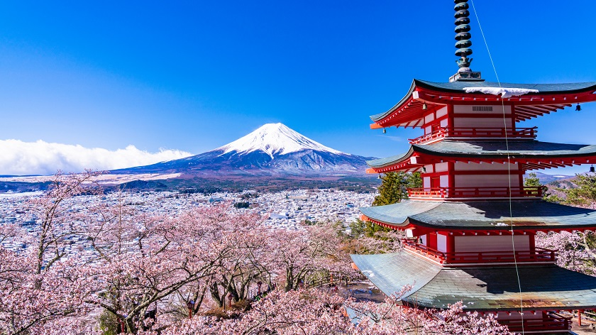
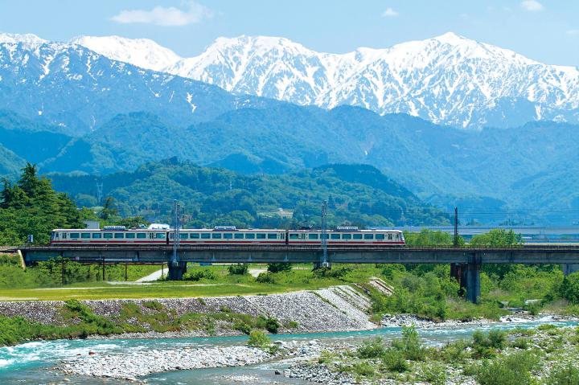

About the Site

Why I chose Japan
I chose Japan for this project because I think it is one of the most interesting countries to study in Earth science. Japan experiences many natural processes such as earthquakes, volcanoes, tsunamis, typhoons, and seasonal climate changes because of its geographic location near tectonic plate boundaries.
I am especially interested in how nature influences daily life in Japan. The country’s mountains, oceans, forests, and changing seasons affect transportation, architecture, food, traditions, and the way people prepare for natural hazards.
Through this project, I want to learn more about how Japan’s geography and earth processes continue to shape the environment, culture, and everyday life of people across the country.
About Me
My name is Saki Imano, and I was born in Sendai in northeastern Japan. Sendai is located near the Pacific coast and is surrounded by beautiful natural scenery, including mountains, forests, rivers, and the ocean. Growing up there helped me appreciate nature and the changing seasons from a young age. Living in Japan made me more aware of how geography and natural processes affect everyday life. Things like earthquakes, typhoons, and seasonal weather changes are a normal part of life in Japan, and people learn how to adapt to them from an early age.
I have always been interested in the connection between nature, culture, and daily life in Japan. Through this project, I want to learn more about how Japan’s geography and earth processes continue to shape the country and the lives of the people who live there.
